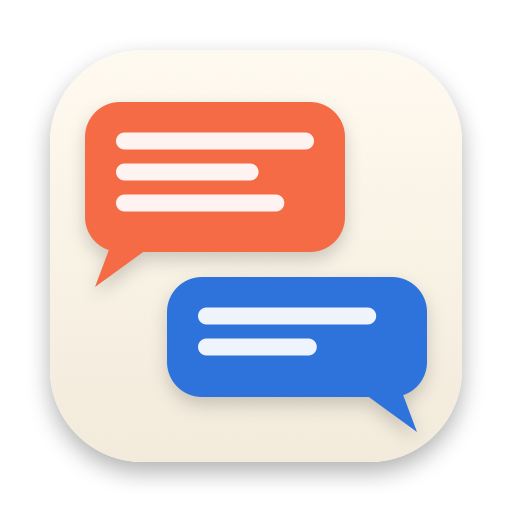

Lessons
A live transcript of your online language lesson, written on your Mac while you talk. Spanish and English, mixed.
Download for MacFree · macOS 26 (Tahoe) or later · Apple Silicon (M1 or newer)
What it does
Both sides of the call
Your voice from your microphone, the other person's from Zoom, Chrome, Safari or Teams. Each line is labelled with who said it.
Spanish and English together
Two on-device recognisers listen at once and the transcript switches language mid-sentence. The other language is shown in italics.
For students and teachers
Choose whether you're the student or the teacher, and whether the lesson is mostly Spanish or mostly English.
Notes as you go
Type a note during the lesson and it's saved with the time. All your lessons are in one searchable library, in folders if you like.
Study notes on your Mac
When a lesson ends, Apple Intelligence can write study notes on your Mac: a summary, key concepts, vocabulary, phrases and what to practise. Use the default prompt or write your own. Needs Apple Intelligence turned on. Or use "Copy for AI" to paste the transcript and a ready-made prompt into any AI assistant.
Plain files
Every lesson is saved as a Markdown file in a folder you choose. Open it in any app, keep it, back it up, or delete it. Choose a folder in iCloud Drive or Google Drive to have your lessons on all your Macs.
Privacy
Everything happens on your Mac. Speech is transcribed by Apple's on-device speech recognition. No audio is recorded or saved, only the text, and nothing is uploaded anywhere. There's no account and no tracking. Study notes are written by Apple Intelligence's on-device model, on your Mac too. The only network requests are macOS downloading its speech and Apple Intelligence models once, and an optional once-a-day check for a newer version of the app on GitHub. You can turn that check off.
Tell the other person before you start that you're making a transcript of the lesson.
Getting started
- Open
Lessons.dmgand drag Lessons to Applications. - Open Lessons, choose your microphone, and say something to check the level meter.
- Join your lesson in Zoom or the browser, then click Start.
- The first time, macOS asks for permission:
- Microphone: so Lessons can hear you.
- Screen & System Audio Recording: macOS uses this one permission for capturing another app's audio. Lessons captures only the call app's sound, never your screen. After you allow it, quit and reopen Lessons.
- Click Stop at the end. Lessons tidies up the transcript and saves it to your library. If Apple Intelligence is on (System Settings › Apple Intelligence & Siri), it offers to write study notes too.
Tip: wear headphones. Lessons removes the faint leak of the call into a sensitive mic, but sound from your speakers would be transcribed twice.